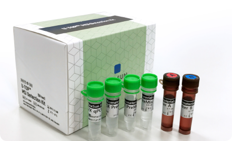
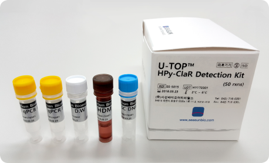

U-TOP™ MSI Detection Kit
Test reagent for tumor related gene
[3]
Medical equipment for vitro diagnosis (Permit No. 17-642)
Reagent for diagnosing hereditary non-polyposis colorectal cancer
involving suspected
functional disorder of MMR gene by using microsatellite instability (MSI)

Product review
U-TOP™ MSI Detection Kit is an in vitro diagnostic medical device that assists a diagnosis for familial
non-polypsis colon cancer which
includes suspected dysfunction of MMR gene, by performing a qualitative analysis of the nucleic acid
sequence for microsatellite genes (NR21,
NR24, NR27, BAT25, BAT26) on the DNA extracted from normal and tumorous tissues of patients with family
history selected from among
those confirmed with colon cancer, with multiplex real-time PCR based on MeltingArray™ developed by
SEASUN BIOMATERIALS.
U-TOP™ HPy-ClaR Detection Kit
Product for detection of clarithromycin resistance mutation in Helicobacter pylori
Product review
Helicobacter pylori is a type of bacteria that cause chronic gastritis, peptic ulcer, marginal zone B
lymphoma, and stomach cancer while
parasiting over an extended period of time on gastric mucosa. U-TOP™ Hpy-ClaR Detection Kit is an in
vitro diagnostic reagent designed
to determine any infection by helicobacter pylori and discriminate the mutation of A2142G, A2143G, and
T2182C in the gene of 23S rRNA
which induces resistance to Clarithromycin, an important antibiotic used in disinfection treatment. It
is important to check for any resistance
to Clarithromycin by conducting a test before sterilizing helicobacter pylori.
Insight™ Onco Lung Panel
Highly sensitive genomic analysis kit for testing gene mutation related to lung cancer

Product review
With mutant enrichment technologies, Insight™ Onco is able to detect cancer related mutations at minimum
frequencies of 0.05%. With
high-level sensitivity, the system can detect DNA mutation present in cancer, using not only a small
quantity of tissues, but also blood
plasma and urine. As its analysis can be performed with a small quantity of blood or urine alone, it can
conduct safer and regular gene
mutation monitoring than existing sampling methods. Moreover, as Insights™ Onco can perform multiple
analysis based on Next Generation
Sequencing (NGS), single sampling can simultaneously detect several instances of mutation present in
cancer-related genes such as EGFR,
BRAF, KRAS, PIK3CA, and HER2. As it can prescribe a target drug for cancer patients with certain DNA
abnormality, the analysis can improve
the treatment efficiency and minimize side effects.